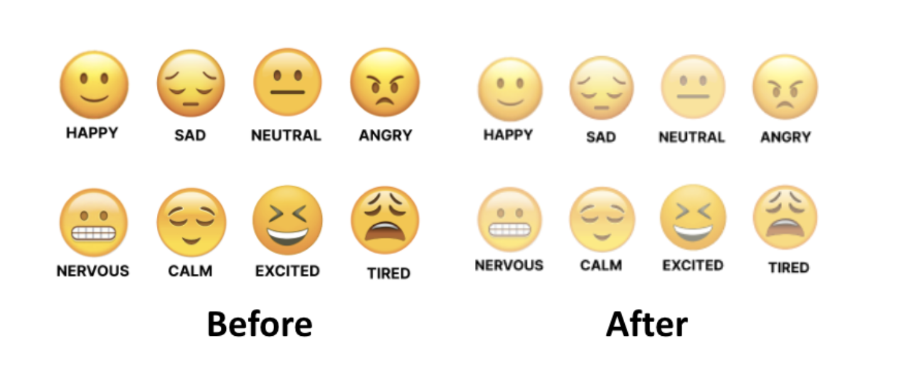

final prototype.
CREATED BY: MICHAELLA HENRY, JULIE LELY, & EUGENIA ZHANG USING INVISION & FIGMA

Part I: Heuristic Evaluations
For the final stage in this project, we had three testers perform a Heuristic Evaluation on our high fidelity prototype based on Nielsen’s Ten Usability Heuristics to modify our interface and complete a final prototype. We used this as a method for finding the usability problems in our user interface design so that they could be attended to as part of an iterative design process. The ten principles of usability or “heuristics” are: visibility of system status; match between system and the real world; user control and freedom; consistency and standards; error prevention; recognition rather than recall; flexibility and efficiency of use; aesthetic and minimalist design; help users recognise, diagnose nd recover from errors; and help and documentation.
Part II: Important insights from our evaluators’ feedback
- “Help and documentation: There is no tutorial or help menu in this prototype. While the system is indeed simple and uses metaphor and consistency to intuitively guide the user, perhaps a quick intro page intended to help the user navigate the app for the first time would be helpful.”
- “The number of mood logging options seemed sufficient, but I am curious if users are only allowed one log per day or if they can submit multiple logs throughout the day as their mood shifts.”
- “As mentioned repeatedly above, I commend this system on its streamlined nature. As the app is designed for one very specific purpose, the pathway is uncluttered and clear with a high degree of efficiency and learnability. The order of operations reminds me of what a user would do in real life with a physical mood journal and calendar.”
Part III: Our takeaways and final modifications
Since we had two different home page designs and didn’t know which to use, we put both of them into
the prototype to see if users had any strong preferences. However, this ended up causing a lot of
confusion. We also were not using a consistent name for our homepage and had “dashboard” and “home”
dispersed randomly throughout the app. We were told that it was hard to identify where one was within
the app, as we did not have enough headers/signifiers. Another 2 problems were the user not having
enough navigation freedom on certain pages of our interface and the emojis on the log mood page being
too jarring and different from our color scheme.
To apply Visibility of System Status, we added headers to every page and highlighted the icons on the
menu bar to indicate what page the user was on. Also in our earlier prototype, we had two versions of
the home page, so we consolidated it into one for consistency. Multiple evaluators mentioned that in
terms of aesthetic design, the bold yellow color of the emojis contradicted the rest of the soft pastel
color scheme. To fix this, we desaturated the colors of the emojis. We also chose the wording “dashboard”
over “home” for consistency.
